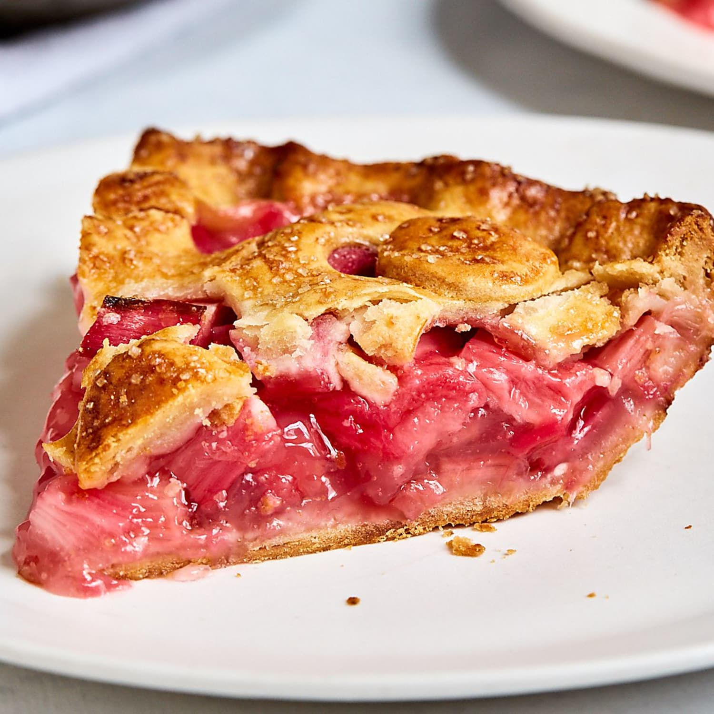

Rhubarb Pie

This rhubarb pie is sweet and tangy with a fruity filling that holds together nicely.
Plus, it's easy to make with just five ingredients.
Personally, no other pie can top rhubarb pie.
It's my mom's favorite, and she definitely passed her love of this pie down to me!
Ingredients
- 1 (9-inch) unbaked pie crust
- 4 cups chopped fresh rhubarb
- 1 large egg
- 1 and 1/2 cups white sugar
- 1/3 cup all-purpose flour
- 1/2 cup all-purpose flour
- 1/2 cup brown sugar
- 1/4 cup butter, melted
Steps
- Preheat the oven to 450 degrees F (220 degrees C).
- Arrange pie crust in a 9-inch pie pan. Spread rhubarb in an even layer in the bottom of the crust.
- Whisk egg, white sugar, sour cream, and 1/3 cup of flour together in a medium bowl until smooth. Pour over rhubarb.
- Mix 1/2 cup of flour and brown sugar together in a small bowl; stir in melted butter until mixture is crumbly. Sprinkle over top of the pie.
- Bake for 15 minutes in the preheated oven, then reduce the heat to 350 degrees F (175 degrees C). Continue to bake until the edges have puffed, and the topping is golden, about 40 minutes. The center may still be slightly jiggly. Cool completely before slicing and serving.